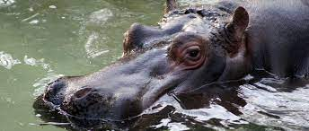

Cuidado Animal: el área incluye enriquecimiento ambiental y entrenamiento animal para desarrollar e incrementar comportamientos propios de la especie a través de la estimulación mental y física de los animales.

Tratamientos de nuestros animales
Cuidado Animal: el área incluye enriquecimiento ambiental y entrenamiento animal para desarrollar e incrementar comportamientos propios de la especie a través de la estimulación mental y física de los animales.
Sanidad: refiere al cuidado de la salud, medicina preventiva, realización de chequeos y exámenes clínicos en nuestro laboratorio, investigación y tratamiento de las patologías, nursery (cuidado neonatal) y nuestro Centro de Incubación y Recría de aves.
Reproducción: es sumamente importante para la conservación de las especies. Es por esto, que contamos con un Centro de Incubación y Cría (CIR): una Nursery en nuestro Hospital Veterinario.
Nutrición: contamos con un Departamento de Nutrición en el cual se preparan las dietas de todos los animales de Fundación Temaikèn, contemplando los requerimientos necesarios y la forma más conveniente en que se presentará la misma.
Acuario: para los habitantes del agua, recreamos un mundo a su medida. Consta de tres ambientes de la Argentina asociados al agua con sus especies características: la poza de marea, el sector de agua dulce y el océano. Además, contamos con ambientes que albergan llamativas especies exóticas.